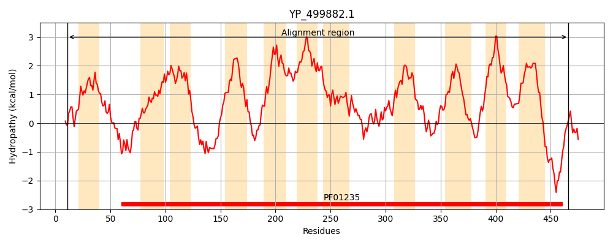
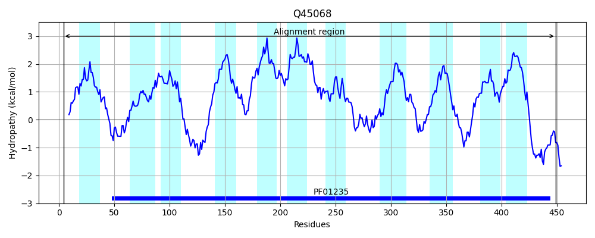
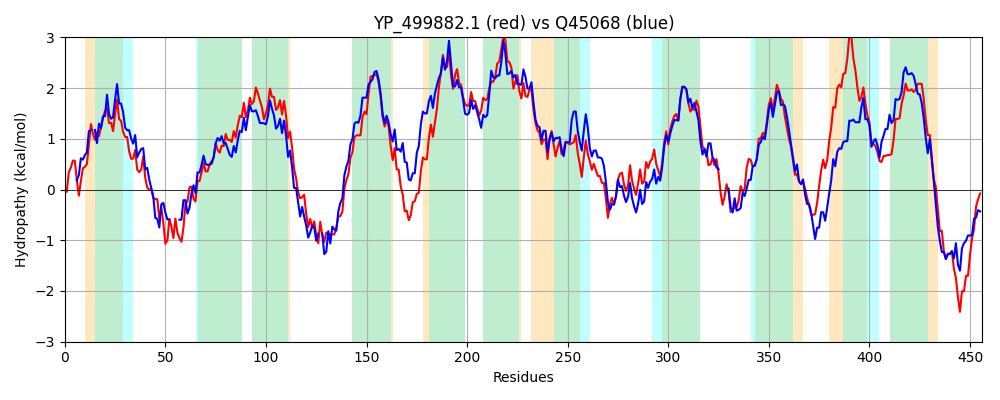

Hit Accession: Q45068
Hit TCID: 2.A.25.1.5
Hit Description: gnl|BL_ORD_ID|13616 gnl|TC-DB|Q45068|2.A.25.1.5 Amino-acid carrier protein AlsT OS=Bacillus subtilis (strain 168) GN=alsT PE=2 SV=1
Mach Len: 456
e:0.000000
Query TMS Count : 11
Hit TMS Count: 11
TMS-Overlap Score: 8.050000
Predicted Substrates:CHEBI:2539;alanine
BLAST Alignment:
Score: 1291 , Bit scores: 501 bits, E-value: 6.1e-176, Alignment length: 456, Percentage identity: 55
Query: 11 WFKEFVHVGTDLIWSQYLIGLLLTAGFFFTISSKFVQLRMLPEMFRALVERPETLEDGKKGISPFQAFAISAGSRVGTGNIAGVATAIVLGGPGAVFWMWVIAFIGAASAFIEATLAQVYKVHDKDGGFRGGPAYYITKGLNQKWLGIVFAILITITFAFVFNTVQSNTIAESLNTQYNISPVITGIILAIVTAIIIFGGVRSIATLSSLIVPIMAIIYIGMVLVILLFNLDQIVPMIGTIIKSAFGIEQVTGGAVGAAVLQGIKRGLFSNEAGMGSAPNAAATAAVPHPVKQGLIQSLGVFFDTMLVCTATAIMILLYSGLKFGDNAPQGVAVTQSALNEHLGSAGGIFLTIAVTLFAFSSVVGNYYYGQSNIEFLSTNRVILFIFRCLVVVLVFVGAVVKTETVWNTADLFMGLMAIVNIISIIGLSNVAFALMKDYQKQKKEGKNPVFKPENL 466
+F +++ +D IW +YL +L+ G FFTI F+Q R EMFR + E+PE G KG+S QAF ISA SRVGTGN+ GVA AI GGPGAVFWMWV+A +G AS+F+E+TLAQ+YKV D + FRGGPAYYI KGL +WLGIVFAILIT++F +FN VQ+NTIA +L+ ++++ ++ I+LA++TA IIFGG++ + +S LIVP+MA IYI + L +++ N+ +I TI+K+A G EQV GG +G ++ G +RGLFSNEAGMGSAPNAAATA V HP KQG IQ+LGVFFDT ++CT+TA +ILLYS GD G+ VTQ+ALN H+G F+ +A+ LFAFSSVVGNYYYG++NIEF+ T++ L I+R V+ +V G++ + VW+ ADLFMG+MA++N+I I LSNVA+ + KDY KQ+K+G +PVFK +N+
Sbjct: 4 FFNSLINIPSDFIW-KYLFYILIGLGLFFTIRFGFIQFRYFIEMFRIVGEKPE----GNKGVSSMQAFFISAASRVGTGNLTGVALAIATGGPGAVFWMWVVAAVGMASSFVESTLAQLYKVRDGED-FRGGPAYYIQKGLGARWLGIVFAILITVSFGLIFNAVQTNTIAGALDGAFHVNKIVVAIVLAVLTAFIIFGGLKRVVAVSQLIVPVMAGIYILIALFVVITNITAFPGVIATIVKNALGFEQVVGGGIGGIIVIGAQRGLFSNEAGMGSAPNAAATAHVSHPAKQGFIQTLGVFFDTFIICTSTAFIILLYSVTPKGD----GIQVTQAALNHHIGGWAPTFIAVAMFLFAFSSVVGNYYYGETNIEFIKTSKTWLNIYRIAVIAMVVYGSLSGFQIVWDMADLFMGIMALINLIVIALLSNVAYKVYKDYAKQRKQGLDPVFKAKNI 449 | Protein Hydropathy Plots: |
|---|
|  |  |
Pairwise Alignment-Hydropathy Plot:
|
|---|
|  |